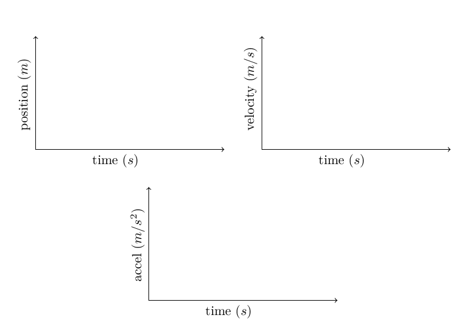

Lab 01 - Introduction and Maths
Table of Contents
This lab is designed to give some insight into what position (\(x\)), velocity (\(v\)) and acceleration (\(a\)) mean in this physics class. In this lab, your own body will become the object which undergoes motion. You will measure your motion with a “motion sensor”, and investigate the relationship between these three quantities.
- Log onto a computer station and start the Pasco Capstone software. This will give you an interface for taking your measurements.
- Position your motion sensor in an area of the lab room which is clear of obstacles, and start the motion sensor using the record button in Capstone. The motion sensor will begin clicking when it is activated. Experimentally determine the minimum and maximum distance which the sensor can measure.
\(x_{\text{min}}\) =__________________
\(x_{\text{max}}\) =__________________
Experiment 1: Constant position
Make your body move in such a way that your position remains constant. Please record the motion of the object using the Capstone software.

Checkpoint:
- What should you do to move your body with constant position?
- If your position is constant, what is your velocity? What is your acceleration?
Experiment 2: Constant velocity
Make your body move in such a way that your velocity remains constant. Please record the motion of the object using the Capstone software.
Checkpoint:
- Is it easy to move your body at constant velocity?
- When your velocity is constant, what happens to your position as time elapses? What is the acceleration?
- Is there a mathematical function which describes your position as time elapses \(x(t)\)?
Experiment 3: Constant acceleration
Make your body move in such a way that your acceleration remains constant. Please record the motion of the object using the Capstone software.
Checkpoint:
- Is it easy to move your body at constant acceleration?
- When your acceleration is constant, what happens to your velocity as time elapses? What about your position?
Experiment 4: Constant acceleration using an air track
Movement at constant acceleration can be hard to achieve! You will now use an air track and cart to get some better data for a constantly accelerating object.
Position your air track such that it is inclined at a small angle and attach a cardboard flag to the top of the cart. Move your motion sensor to one end of the track such that it will record the position of the cart as it slides down the track.
Checkpoint:
- Is the position, velocity or acceleration constant for this motion?
- Is there a mathematical function which describes your position and velocity as time elapses \(x(t)\) and \(v(t)\)?
Review of Mathematics
Now lets solve some algebra and trig problems!
You need to master this math to do well in the rest of the course!
- You are driving your car at a speed of 34 miles per hour. Convert this speed to meters per second: \(~~~~~~~~~~\) Conversions: 1 mile = 1.60934 km, 1 km = 1000 m, 1 min = 60 sec, 1 hr = 60 min \[~\]
- The equation relating final speed, \(v_f\), to original speed, \(v_0\), in terms of acceleration \(a\) and distance \(x\) is \(v_f^2 = v_0^2 + 2a(x - x_0)\). Solve for x. \[~\]
- The algebraic equation for kinetic energy is \(KE = \frac12 m v^2\). Solve for v. \[~\]
- Solve for x in the following equation (use the quadratic equation)
\[2x^2 - 3 + 4x = 2\] \[~\]
- How many equations are written below and how many unknowns do the equations have? What are the requirements in order to solve the system of equations? Solve for x and y:
\[x + 4y = 3 \qquad \qquad 3x - y = -2\] \[~\]
- A \(9~m\) long ladder leans against the side of a building. If the ladder is inclined at an angle of \(75.0^\circ\) to the horizontal, what is the horizontal distance from the bottom of the ladder to the building? \[~\]
- A right triangle has a hypotenuse of length \(3~m\) and one of its angles is \(30^\circ\). What are the lengths of the side opposite the \(30^\circ\) angle and adjacent to the \(30^\circ\) angle? \[~\]
- A right triangle has two sides which are perpendicular to each other that are \(3~m\) and \(4~m\) long. What is the length of the hypotenuse? What is the value of the angle which touches the \(3~m\) side of the triangle? What is the value of the angle which touches the \(4~m\) side of the triangle? \[~\]